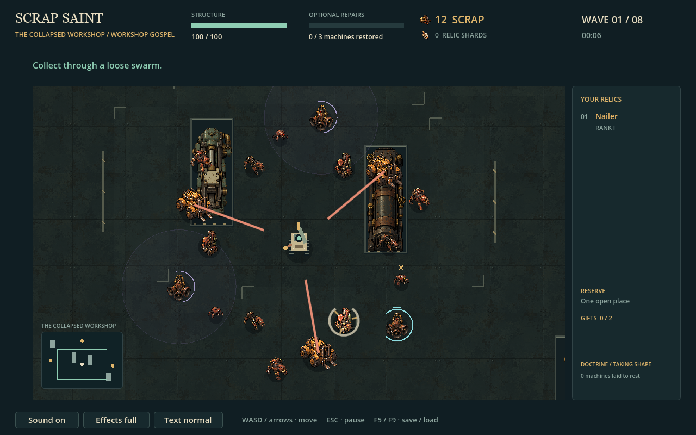

Native gameplay captures at 1280×800. Six ordinary enemy families; three optional fixtures with broken, working and restored states. Existing Saint and attack geometry preserved. Fixed-view sprites, not articulated walk cycles.
ROSTER COMBAT

Repair differences include straightened rollers, joined coolant plumbing and a reset bell striker. Small details are subtle during play; progress and completion markers remain essential. No human playtesting claimed.